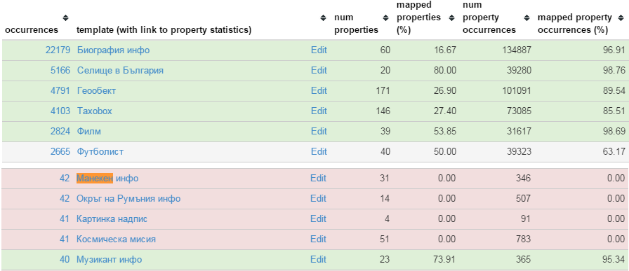

Adding a DBpedia Mapping
Vladimir Alexiev
DBpedia Meeting, Dublin, Ireland, 2015-02-16
2D presentation (O for overview, ? for help). Continuous HTML. Publications
Outline
Show practical steps to add a mapping:
- Preparation
- Find a template to map
- Generate blank mapping with Chrome plugin
- Explore the meaining of each property from the template definition
- Pick appropriate ontology properties
- Create missing properties
- Clean up (or post as issues) any problems you find along the way
- Test the mapping
Prepare for Mapping
To work more easily with the mapping wiki info, install some addons
- CopyURL Chrome Plugin
- Many URLs in dbpedia are International Resource Identifiers (IRIs)
- When you copy from the browser's address bar, an IRI is URL-encoded
Unreadable ugliness like
http://bg.dbpedia.org/resource/%D0%9A%D0%BE%D0%BD%D1%81%D1%82%D0%B0%D0%BD%D1%82%D0%B8%D0%BD%D0%B0_%D0%96%D0%B8%D0%B2%D0%BE%D0%B2%D0%B0
- Instead, this plugin allows you to copy & paste IRIs like http://bg.dbpedia.org/resource/Константина_Живова
- These are readable and allow other editors to see what they represent: it's editorial policy
- mappings_chrome_extension
- generates blank mappings by analyzing which template properties are used
- Download the extension
- Go to file:///c:/my/GitHub/my/pres/20150209-dbpedia/~chrome:/extensions~, enable "Developer mode"
- "Load unpacked extension" and point to the extension folder
- Note: mapping-tool is a GUI mapping tool.
- Potentially much more useful, but is 4y old and I haven't tried it
Prepare for Mapping (2)
- This is a Windows program (not Chrome plugin) that allows you to edit web text with your favorite editor.
- Map editing may involve significant text operations, so I use this all the time with Emacs
- It creates a temp file, calls your editor, watches the file for changes, and pastes back into the browser text box
- You can save the file with your editor many times before you finish
- This is better than the other similar programs ("edit servers") I've tried
Find Template to Map
- You can start from a wiki page you like that doesn't have much semantic data
- eg the Model (mannequin) Константина_Живова has no type
- since the template Манекен_инфо is not yet mapped
- Or browse stats for your language

Start a Blank Mapping
- Click "Edit" on the stats screen, which takes you to http://mappings.dbpedia.org/index.php?title=Mapping_bg:Манекен_инфо&action=edit
Or directly start a new mapping by replacing the template URL
https://bg.wikipedia.org/wiki/Шаблон:* -> http://mappings.dbpedia.org/index.php?action=edit&title=Mapping_bg:*
- the Chrome plugin makes a blank map for us (hurray!):
{{TemplateMapping | mapToClass =
| mappings =
!-- {{ PropertyMapping | templateProperty = imdb | ontologyProperty = }} --
!-- {{ PropertyMapping | templateProperty = Име | ontologyProperty = }} --
Search for Properties
- so we first need to map "imdb" (International Movie DataBase id)
- we search for "imdb" on the mapping wiki. We don't find a property directly
- then we search for "imdb*" and find the property imdbId: that's the one we need
- however, it has rdfs:domain = Film while we're mapping a Model, which is a Person
So we remove rdfs:domain and replace it with a comment (see the diff):
|comments= {{comment|en|International Movie Database ID. Applies to Films, Actors, etc}}
Add A Property
There are a few props we need to add, eg zodiacSign, skinColor
- We check Wikipedia or Google for the right name, and find that it applies not only to People but also to Planets
- Go directly to http://mappings.dbpedia.org/index.php?title=OntologyProperty:ZodiacSign&action=edit
- Entering the prop info is best done from a template
- We also check the use of this prop in wikipedia and find out that it links to pages, eg
[[Телец]](Taurus). So we need an ObjectProperty Entering an appropriate comment is mandatory: describe the usage in detail:
{{ObjectProperty | labels = {{label|en|zodiac sign}} |comments= {{comment|en|Zodiac Sign. Applies to persons, planets, etc}} }}
Add a Tracking Issue
Looking for "shoe size", we find two duplicate properties. showSize is the proper English term, so we choose to remove showNumber
- Search for "shoeNumber" to see how many times it's used. If it's a few, just do it (delete the prop and replace the usages)
- But in this case there are a many, so let's make an issue hoping that someone else (maybe with the help of a bot) will do it
- Go to https://github.com/dbpedia/mappings-tracker/issues/new
- Type a title: "replace shoeNumber with shoeSize"
- Paste the link of the property discussion page: http://mappings.dbpedia.org/index.php?title=OntologyProperty_talk:ShoeNumber
- Put all details on the discussion page: we use the tracker only to track, not to discuss/explain
Describe the Problem
- Go to the Discussion tab of the shoeNumber property
Add a description of the problem:
* Duplicate of shoeSize (which is the proper English term). * Also, xsd:integer is not appropriate, xsd:string is better. * So: delete and replace all usages with shoeSize. https://github.com/dbpedia/mappings-tracker/issues/34 --~~~~
- Paste the new issue link that you just created. This way the issue and prop are inter-linked
- Sign your submission! The --
~~at the end is converted to the datetime and your name
Add Another Property
The "vital stats" for a Model include height, weight, eyeColor, hairColor, skinColor, shoeSize, zodiacSign, bustSize (but of course!), waistSize, hipSize
- enwiki and jawiki have fields bustSize, waistSize, hipSize
- An app to sort models by these measures would surely be a commercial success :-)
- bgwiki uses a composite field bust-waist-hip size (мерки: бюст-талия-ханш)
So I made a new composite property, describing in detail its usage vs the 3 separate properties (rdfs:comment):
{{DatatypeProperty |rdfs:label@en=bust-waist-hip Size |rdfs:label@bg=размер бюст-талия-ханш |rdfs:domain=Person |rdfs:range=xsd:string |rdfs:comment@en=Use this property if all 3 sizes are given together (DBpedia cannot currently extract 3 Lengths out of a field). Otherwise use separate fields bustSize, waistSize, hipSize }}- Also made enh req #325 extract several Lengths out of a field
- Finally, I linked the issue to the property, by putting this in the property's Discussion page: "If #325 is implemented, this should be deleted in favor of 3 separate fields"
Completed Mapping
Move any unmapped props to the end, in a comment !-- ... --
{{TemplateMapping | mapToClass = Model
| mappings =
{{ PropertyMapping | templateProperty = imdb | ontologyProperty = imdbId }}
{{ PropertyMapping | templateProperty = Име | ontologyProperty = foaf:name }}
{{ PropertyMapping | templateProperty = дата на смърт | ontologyProperty = deathDate }}
{{ PropertyMapping | templateProperty = дейности | ontologyProperty = occupation}}
....
{{ PropertyMapping | templateProperty = цвят на кожа | ontologyProperty = skinColor }}
{{ PropertyMapping | templateProperty = цвят на коса | ontologyProperty = hairColor }}
{{ PropertyMapping | templateProperty = цвят на очи | ontologyProperty = eyeColor }}
}}
!-- NOT YET MAPPED
{{ PropertyMapping | templateProperty = категория | ontologyProperty = }}
{{ PropertyMapping | templateProperty = филми | ontologyProperty = }} dbo:film has domain FilmFestival
--
Test the Mapping
- At the mapping page you'll find some useful links
- Link to return triples from the mapping: unfortunately works only for ASCII names (#289)
So find some usages and pick up some names
Летисия Каста Константина Живова
- Then go to the Discussion page, add a section "Testing" and make a list of links eg
- This is especially important if you fix a mapping
- It's proposed editorial policy
Special: Intermediate Node Mapping
The template en:Listen (el:Ακούστε, bg:Слушайте) adds soundRecording's that are somehow related to the subject. We map it to additional nodes like this (#19):
<Neil_Armstrong> soundRecording <Neil_Armstrong__1>. <Neil_Armstrong__1> a Sound; dc:type "speech"; filename "one-small-step.ogv"; title "One small step for man..."; description "Neal Armstrong's famous words".
- An outer
TemplateMappingwithmapToClass owl:Thing:Listencan be embedded in various pages, and the only common class for all of them is the top-levelowl:Thing - Inside we make a number of
IntermediateNodeMappingfor the separatesoundRecording. They sharetypeand each has 3 own fields:
{{TemplateMapping | mapToClass = owl:Thing
| mappings =
{{IntermediateNodeMapping | nodeClass = Sound | correspondingProperty = soundRecording | mappings =
{{ PropertyMapping | templateProperty = type | ontologyProperty = dc:type }}
{{ PropertyMapping | templateProperty = filename | ontologyProperty = filename }}
{{ PropertyMapping | templateProperty = title | ontologyProperty = title }}
{{ PropertyMapping | templateProperty = description | ontologyProperty = description }}
}}
{{IntermediateNodeMapping | nodeClass = Sound | correspondingProperty = soundRecording | mappings =
{{ PropertyMapping | templateProperty = type | ontologyProperty = dc:type }}
{{ PropertyMapping | templateProperty = filename1 | ontologyProperty = filename }}
{{ PropertyMapping | templateProperty = title1 | ontologyProperty = title }}
{{ PropertyMapping | templateProperty = description1 | ontologyProperty = description }}
}}